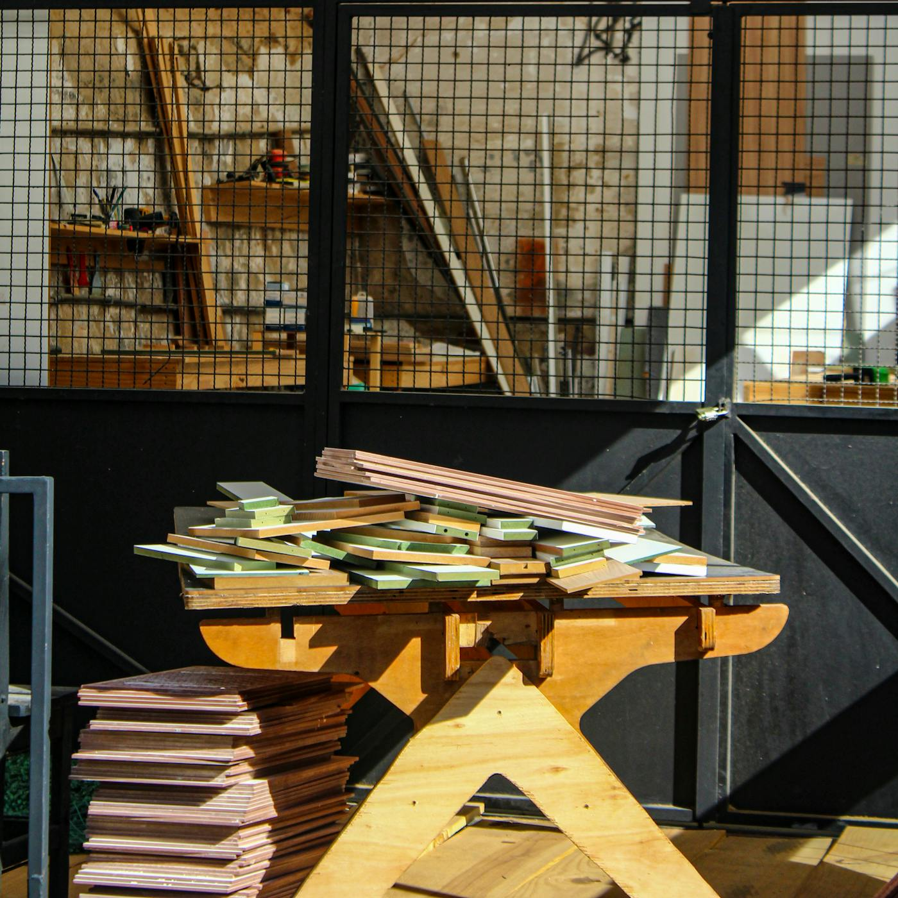
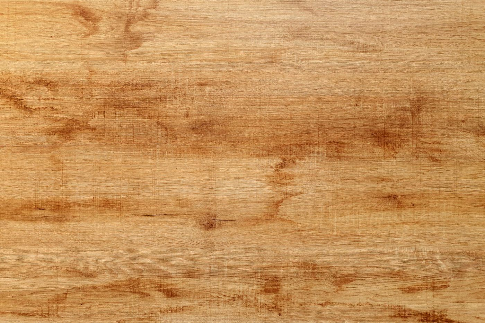
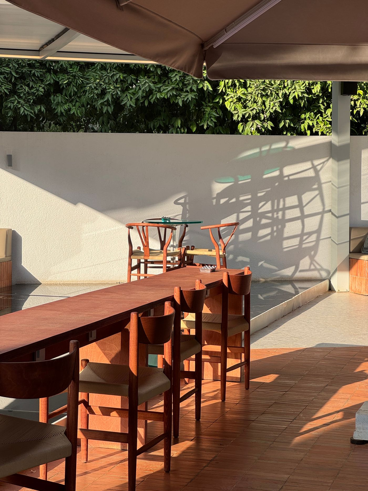
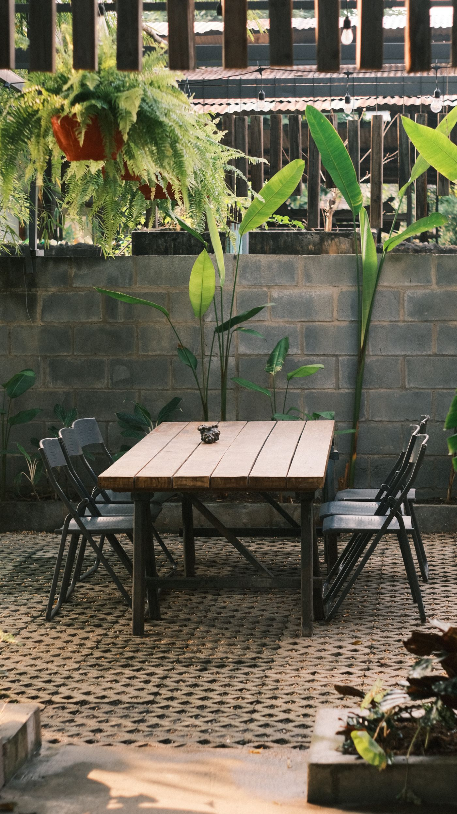
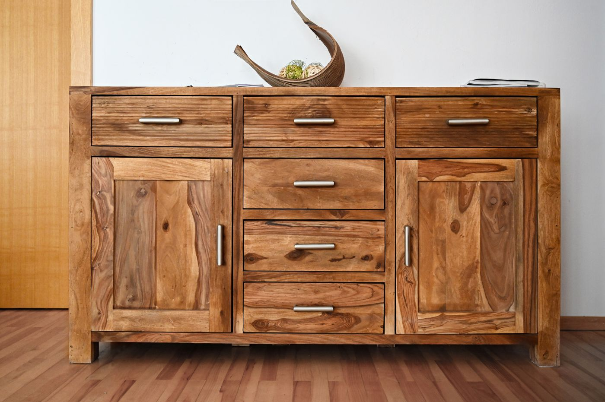

懂柚木的人，在这里交流
围绕木纹、油性、结构、养护和空间搭配交流真实经验，让喜欢柚木的人有一个可以慢慢沉淀的地方。
About Yuxi
柚喜饰界，是一个围绕柚木知识、柚木好物、柚木整装、柚木地板、推荐厂商和爱好者社群建立的柚木生活方式入口。我们不把网站做成普通家具展示页，而是先帮助用户看懂柚木，再根据需求连接合适的产品、空间方案和厂商资源。
围绕木纹、油性、结构、养护和空间搭配交流真实经验，让喜欢柚木的人有一个可以慢慢沉淀的地方。
把常见坑点、材质判断、使用场景和沟通清单提前讲清楚，让选购从冲动变成有依据的判断。
通过内容共创、工艺说明和样板展示方向建立信任，但不替代后续真实资料、授权和资质核验。
先搞清楚什么是柚木、为什么受欢迎、适合放在哪些空间，再决定自己到底需要哪一种柚木生活方式。入门不是背百科，而是知道哪些问题会影响日后使用。
真假柚木、报价差异、常见套路、买前要问什么，都用尽量直白的话拆开讲，帮你少被话术带着走。适合已经开始看产品、看空间方案或准备咨询厂商的人先过一遍。
木纹、油性、拼接、烘干、结构、表面处理，这些不是冷知识，而是影响稳定性、触感和长期使用的关键。看懂这些，再看整装、地板和家具会更有判断力。
庭院、阳台、茶室、会客厅、餐厅、民宿、会所，柚木进入空间后要看比例、光线、动线和使用频率。真正舒服的柚木空间，不只是材料好看，还要和人的生活节奏合拍。
清洁、防晒、防潮、上油、户外老化和日常护理，重点不是越勤快越好，而是别用错方法。不同空间、不同使用频率，对维护方式的要求也不一样。
用 FAQ 方式回答用户真实会搜、真实会问的问题，后续可以持续沉淀成知识内容和社群答疑素材。遇到不确定的问题，也可以先添加顾问，把需求说清楚再判断。
从家具单品，到柚木地板、柚木整装和整体空间应用，让柚木真正进入生活场景。

适合想把柚木系统用进庭院、阳台、茶室、会客厅、民宿或私宅空间的用户。重点不是堆木头，而是从地面、墙面、家具、软装和空间气质上统一考虑。

柚木地板，是进入柚木生活方式的基础入口。选地板不能只看颜色，还要看木材稳定性、脚感、纹理、安装方式、适用空间和后续维护。

面向庭院、露台、阳台和户外休闲家具，重点看耐候性、结构稳定性、排水、防晒和长期使用感。

围绕茶台、边几、会客椅、收纳柜和空间氛围，重点看温润感、比例、触感和现代东方生活气质。

餐桌椅、休闲椅、边柜和小件家具，重点看选材、结构、边角处理、坐感和真实使用场景。
柚喜饰界不做简单广告展示，而是通过产品、工艺、交付说明和用户反馈路径，帮助优质柚木厂商建立长期信任；当前仅展示样板方向，不代表真实厂商背书。
先看厂商是否能说清自己擅长工坊、整装、地板、户外或家具好物中的哪一类。
是否能提供真实图片、材料说明、工艺过程、适用空间和可公开的基础信息。
愿意把能公开和不能公开的内容讲清楚，避免用户把样板图误解成已发生的成交内容。
能说明沟通、生产、交付、安装、维护和售后边界，减少后续理解偏差。
产品和服务方向适合进入柚木爱好者视野，而不是只做简单广告曝光。
愿意和平台一起把材料、工艺、空间应用和用户问题讲清楚，长期沉淀信任。
Enterprise WeChat Community
买柚木前，先来这里问一问。
添加柚喜顾问，不是马上推销，而是先了解你的需求。这里不是广告群，而是一个交流柚木知识、选购经验、空间方案和厂商共创的企业微信入口。喜欢柚木、正在看柚木整装或柚木地板、正在做柚木的人，都可以先添加柚喜顾问，再按需求进入社群、咨询或合作沟通。